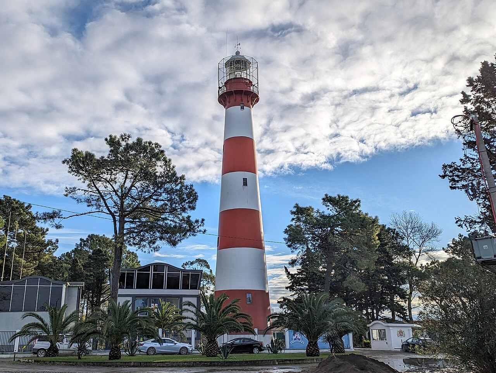
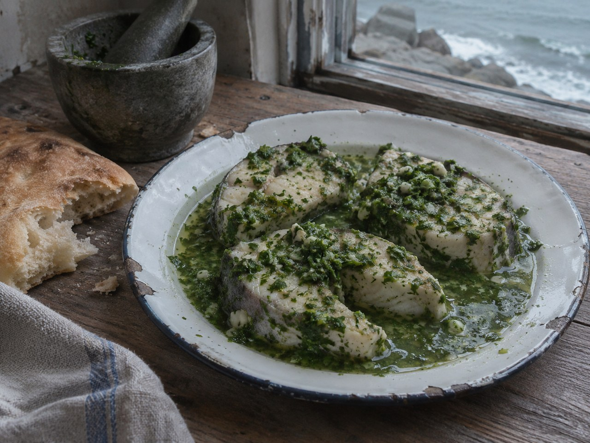

Сто пятьдесят две

Сома принёс племянник, Заза, сегодня утром, с Риони. Вот он, в тазу. Не бойтесь, он уже ничего не скажет. Голову я отрезала, голова пойдёт коту, у кота сегодня тоже праздник. Остальное режьте поперёк, кусками в два пальца. Нож вот этот, он тяжёлый, сом любит тяжёлый нож.
Кинзу пока не трогайте, кинза в самом конце. Кинза, если её порезать рано, обижается и темнеет.
Из окна видно маяк. Видите, полосатый? Его отсюда видно из любого окна, я специально так выбирала, когда нам давали квартиру. Отец сказал: бери на пятом этаже, без лифта, зато маяк. Я сказала: папа, мне тридцать лет, у меня двое детей и муж в море, какой пятый этаж. Он сказал: на маяке сто пятьдесят две ступеньки, а тут сколько? Посчитали — восемьдесят. Я согласилась.
Мне семьдесят девять. Я родилась в сорок седьмом году в доме смотрителя, это внизу, у самого маяка, домик с белыми ставнями, его тоже отсюда видно, если высунуться. Отец служил на маяке с тридцать восьмого года до семьдесят девятого. Мама говорила, что вышла замуж не за отца, а за маяк, а отца ей дали в придачу.
Маяк собрали англичане. Привезли кусками на корабле, из Лондона, болты, гайки, чугунные листы, и тут свинтили, как шкаф. Зажгли в тысяча восемьсот шестьдесят четвёртом. Сто шестьдесят два года. Отец про него говорил «он», как про человека. Он сегодня кашляет. Он сегодня не в духе. Он не любит, когда на него лезут в мокрых сапогах.
Режьте, режьте. Кожу не снимайте, кожа держит кусок.
Ключ от маяка один. Его тоже привезли из Лондона вместе с маяком, чугунный, длиной вот с эту доску. Второго никто не делал за сто шестьдесят лет, даже при Советском Союзе, когда всё делали по два экземпляра. Отец носил его на ремне, ремень от тяжести перекашивало, и у отца всю жизнь одно плечо было ниже другого. Когда я была маленькая, я думала, что так у всех смотрителей. Что это у них такая форма.
Теперь воду. Вот кастрюля, туда лук целиком, морковку, лавровый лист, горошек. Соль. Пусть закипит. А сома туда потом, когда закипит, не раньше. Если холодную воду с сомом ставить, он отдаст воде весь вкус и сам останется как вата.
Говорят, наш маяк ни разу не гас. Так и туристам рассказывают. Отец на это сердился. Говорил: гас, конечно. В войну его гасили по приказу, когда ждали налёта, в сорок втором, в сорок третьем, тут же флот стоял, корабли из Севастополя пришли сюда. Гасили, потом зажигали. Он говорил: гасить по приказу и погаснуть — это разное. Он погаснуть ни разу не дал. А что гасили, это не считается.
Ещё рассказывают, что в войну смотритель спас маяк от торпед. Что он что-то заметил ночью, позвонил, и торпеду увели, или катер отогнали, по-разному рассказывают. У нас дома про это спорили всю жизнь. Мама говорила: это он, твой отец, кто же ещё, он тогда три недели наверху сидел, домой спускался только поесть. Отец говорил: я ничего не спасал, я просто не спал. Мама говорила: вот это и называется спасал. Он говорил: нет, это называется работа. Так и не договорились. Он умер в восемьдесят первом, а спор у меня остался. Я теперь сама с собой спорю, то за маму, то за него.
Кипит? Кладите сома. По одному куску, осторожно, ложкой. Огонь потише. Теперь пусть сидит в воде минут двенадцать, не больше. Сом нежный. Переварите — будет как мыло, тогда и киндзмари не поможет.
В пятьдесят седьмом мне было десять лет, и отец в первый раз взял меня наверх. Сто пятьдесят две ступеньки. Он сказал: считай вслух, по-русски, громко. Почему по-русски, я не поняла, мы дома говорили по-мегрельски, в школе по-грузински. Он сказал: на службе всё по-русски, и ступеньки тоже на службе. Я досчитала до девяноста и села. Он сел рядом и ждал, ничего не говорил. Потом пошли дальше. Когда дошла, я заплакала, не от страха, а от того, что дошла. А он открыл дверцу на галерею, и там было море. Всё море. И город внизу, как на тарелке. Он сказал: смотри, как Николадзе нарисовал.
Николадзе — это наш городской голова, при царе. Тогда Поти был болото. Дома на сваях, лихорадка, комары размером с курицу. Николадзе приехал и всё нарисовал заново: площадь, собор посередине, вокруг улицы кругами, как на мишени. Двенадцать улиц вокруг площади назвал по апостолам. Деревянные дома запретил, потому что горели. Часы на старую турецкую башню привёз из Парижа. Отец говорил: сверху видно, что город — это часы, а маяк на нём стрелка, только стрелка стоит, а часы ходят вокруг.
Сверху, правда, видно. Я потом поднималась сто раз, двести, я сама работала в гидрографии сорок один год, мы обслуживали маяк, огни, буи по всему побережью. Сто пятьдесят две ступеньки я пересчитала столько раз, что могу сказать любую с закрытыми глазами. Сорок третья гудит под ногой. Сто восьмая чуть короче остальных, англичане ошиблись. Отец говорил, не ошиблись, а оставили, чтобы смотритель не засыпал на ходу.
Достаём. Шумовкой, по одному. Кладите на блюдо, в один слой. Бульон не выливайте, он нам ещё нужен. Половник бульона сюда, в миску, пусть остывает.
Мой муж Тенгиз был механиком в пароходстве. Двадцать шесть лет в море. Я его видела больше в бинокль, чем дома. Когда его судно шло мимо маяка, отец, пока служил, давал ему лишнюю вспышку. Это не по правилам, правила строгие, у каждого маяка свой характер огня, его нельзя менять. Отец говорил: я не меняю, я подмигиваю. Тенгиз потом с судна передавал по радио: принял. Над этим смеялось всё пароходство.
Потом страна кончилась, и пароходство тоже кончилось. Суда стали продавать. Одно за другим уходили мимо маяка в последний раз, их вели на слом в Турцию, в Индию, не знаю куда. Тенгиз ходил на берег смотреть, на каждое. Говорил: этот я знаю наизусть, у него левый дизель стучит. Потом пришёл домой и сказал: «Ахалцихе» уходит. Это было его судно, на котором он двенадцать лет. Я пошла с ним. Стояли у маяка. Судно прошло мимо, медленно, без своего хода, его тянул буксир. Тенгиз ничего не говорил. Потом сказал: а маяк ему всё равно моргнул. Я посмотрела — нет, маяк днём не горит. Но он так сказал, и я не стала спорить.
Тенгиза нет одиннадцать лет. Он ушёл тихо, во сне, как будто тоже кто-то увёл на буксире.
Теперь кинза. Вот теперь режьте. Мелко, мелко, ещё мельче, и стебли тоже, в стеблях самый запах. Чеснок я сама. Кинзу с чесноком и солью в ступку, потолочь, чтобы пустила сок. Потом уксус, винный, свой. Потом бульон, который остыл. Размешать. Попробуйте. Кисло? Должно быть кисло. Это киндзмари, а не компот.
Заливайте сома. Весь, чтобы каждый кусок был в соусе. И уносим на балкон, на час. Можно на ночь, тогда ещё лучше, но мы до ночи не дотерпим.
Вы знаете, что под Палиастоми, под озером, был греческий город? Фасис. Отсюда фазаны, слово, я имею в виду. Его ищут сто лет и всё не найдут, ныряют, достают кувшины. Тенгиз говорил: город нашли бы давно, если бы искали так, как я ищу запчасти. Мне этот город никогда особенно не был интересен. Там нет маяка. Маяк в Фасисе, наверное, был, но его тоже не нашли.
Мне интересно другое. Вокруг маяка за мою жизнь поменялось всё. Порт стал другой, краны другие, корабли под чужими флагами. Деньги поменялись дважды. Страна менялась. Даже запах в городе другой, раньше пахло мазутом и хлебом, сейчас пахнет рыбной мукой с завода, туристы морщатся. А маяк тот же. Те же болты, тот же ключ, та же вспышка. Его собрали из болтов, а нас из чего? Нас никто не собирал, мы сами как-то держимся.
Сейчас на маяке работает Гоча. Его мать работала со мной в гидрографии. Он вам завтра откроет, я договорилась. Он сначала скажет, что нельзя, потом скажет, что только ради меня, потом откроет. Вы считайте ступеньки вслух. По-русски, вам же так удобнее. Я буду стоять внизу и слушать. Мне до верха уже не дойти, ноги не те, но слушать я могу. На сорок третьей она под вами загудит, и вы скажете: а! Все говорят: а! А на сто восьмой споткнётесь. Все спотыкаются.
Нет, подождите. Я не сказала самое главное. Когда Гоча вам будет открывать, попросите у него ключ. Просто подержать. Он даст, я его предупредила. Возьмите в руку и скажите мне потом, тяжёлый или нет. Мне надо, чтобы кто-нибудь ещё сказал. Мне всю жизнь казалось, что он такой тяжёлый, потому что я была маленькая. А потом я выросла, а он всё такой же тяжёлый. Я хочу знать, это ключ такой или это я.
Принесите с балкона. Час не прошёл, но ладно, я не могу на вас смотреть, вы голодный. Вам вот этот, из середины, он самый толстый. Хвост я сама, я хвост люблю, отец тоже хвост любил. Хлеб отрывайте и макайте в соус, соуса много, он для этого.
Ну что, кисло? А вы ещё. Вот видите, второй уже не кислый. Это у всех так. Первый кусок кислый, второй правильный, а после третьего хочется ещё.

Сом в киндзмари
На четыре-шесть человек
Что нужно
Для рыбы:
- сом — 1,2–1,5 кг (без головы), разрезанный поперёк на куски толщиной 3–4 см;
- вода — около 2 л;
- репчатый лук — 1 луковица;
- морковь — 1 шт.;
- лавровый лист — 2 шт.;
- чёрный перец горошком — 6–8 шт.;
- соль — 1,5 ч. л.
Для киндзмари:
- свежая кинза — 2 больших пучка (150–200 г) вместе со стеблями;
- чеснок — 4–5 зубчиков;
- соль — 1 ч. л.;
- винный уксус (6%) — 80–100 мл;
- остывший рыбный бульон — 150–200 мл;
- по желанию — щепотка молотого острого перца.
Как делать
1. В кастрюле доведите до кипения воду с луком, морковью, лавровым листом, перцем и солью, проварите 10 минут.
2. Опустите куски сома в кипящий бульон, уменьшите огонь и варите при едва заметном кипении 10–12 минут, пока мясо не станет белым и не начнёт отходить от кости. Не переваривайте.
3. Аккуратно достаньте рыбу шумовкой и уложите на блюдо в один слой. Отлейте 200 мл бульона и остудите.
4. Кинзу со стеблями мелко порубите. Чеснок с солью разотрите в ступке, добавьте кинзу и потолките, чтобы она пустила сок.
5. Переложите кинзу в миску, влейте уксус и остывший бульон, перемешайте, при желании добавьте острый перец. Попробуйте: соус должен быть отчётливо кислым.
6. Залейте рыбу соусом так, чтобы каждый кусок был покрыт, и уберите в прохладное место минимум на час, а лучше на несколько часов или на ночь.
7. Подавайте холодным, с хлебом или мчади, обмакивая хлеб в соус.
Киндзмари не любит спешки дважды: кинзу режут в последнюю минуту, а рыбу дают ей хотя бы час, чтобы соус вошёл в каждый кусок.
Тбилиси, ноябрь 2026